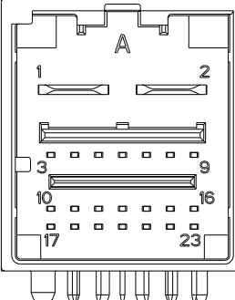

通用设备
诊断仪、万用表、笔记本电脑、CAN数据分析软件和录制设备（例如：周立功或CANOE ）、插针线束、OBD转以太网数据线、Type-c接口的USB数据线等
拆卸/重新安装前向毫米波雷达总成或碰撞前保险杠后必须重新对前向毫米波雷达总成进行专业校准。
经过严重碰撞事故后的车辆，前保险杠存在变形，前向毫米波雷达总成不能安装在原设计位置，必须对机械结构进行修正，保证控制器在原安装位置，再进行专业校准。
1. 确认客户问题，做好拍照或视频记录；
1）故障发生的时间、地点、天气情况，以及车辆配置；
2）本车状态，如仪表显示故障信息、声音报警、异响等；
3）周围环境和道路情况（如车辆前方及临车道车辆情况，是否有明显障碍物、路牌等）；
2. 目视检查是否有明显的机械或电气损坏的痕迹，以及安装位置是否在原设计状态；
3. 目视检查前保险杠总成是否有明显的碰撞变形痕迹，控制器正前方是否被异物遮挡（如车衣，车膜，标签等），包含表面结冰、附着灰尘或泥土，前保险杠是否有下沉；涉及前保险杠的返修，请参照 部件位置图 中的要求执行
目视检查表
|
机械部分 |
电气部分 |
|
前向毫米波雷达总成、安装支架 |
线束及接插件 |
|
前保险杠 |
保险 |
4. 用手检查前向毫米波雷达总成安装是否松动、卡扣是否破裂、控制器及支架是否损坏；
5. 如果目视检查通过，则通过诊断仪读取前向毫米波雷达总成和关联控制器（C3B中央计算机）版本信息、历史故障码、当前故障码，并参考故障症状表进行维修; 前向毫米波雷达总成DTC列表
6.完成故障维修后，务必清除前向毫米波雷达总成故障码
相关系统如C3B、IBCU、EPS、BDC等因故进行换件或更新软件，必须按照相应系统的维修/维护方法进行正确的操作，清除前向毫米波雷达总成故障码。
7.问题发生或复现时，可按“按紧急录制”记录数据辅助分析。
8.问题无法定位时，录制CANFD数据（ADAS ECAN，数据格式.blf或.asc）辅助分析。采用笔记本电脑、周立功或CANOE采集行泊域控控制器40pin连接器ECAN报文，ECAN对应PIN角为下图
行泊中央计算机：ECAN引脚对应A10(CAN3H)，A11(CAN3L)
